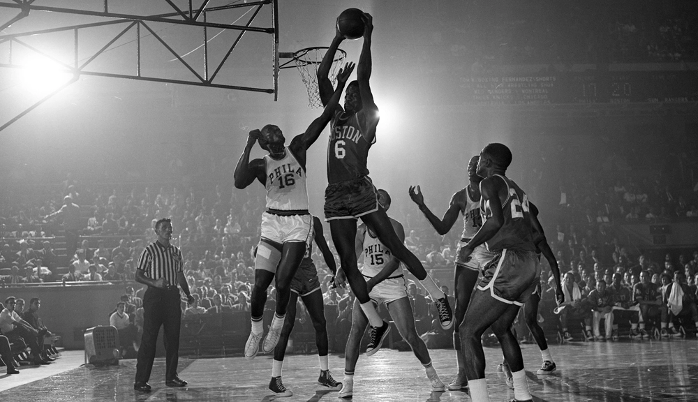

Bill Russell
1934-2022

Bill's Russell's passing is not just an NBA loss; it is a world loss. When your actions match your words on important issues, you are a great man, not just a great basketball player.
- Charles Barkley
Bill Russell's Timeline
- 1934 : Born in Monroe, Louisiana
- 1952 : Tours with California High School All-Star Team
- 1952 : Enters University of San Francisco (USF) on basketball scholarship
- 1954-55 : USF Dons win string of 55 straight games
- 1955 : Named Most Valuable Player of NCAA tournament
- 1955-56 : Named All-American
- 1956 : Plays on gold medal-winning men's basketball team at Summer Olympics in Melbourne, Australia
- 1957 : Signs with Boston Celtics in mid-season and wins first championship
- 1958 : Speaks out against NBA's unwritten quota system for black players
- 1959-1966: Wins back-to-back NBA championships
- 1963 : Gives integrated basketball clinics for youth in Jackson, Mississippi
- 1966-69 : Coaches Boston Celtics as a player-coach
- 1968-1969: Gets his 10th and 11th ring
- 1969 : Joins ABC as color commentator on basketball broadcasts
- 1972 : Boston Celtics retire Russell's number against his will
- 1973-77 : Coaches Seattle SuperSonics
- 1974 : Elected to Basketball Hall of Fame
- 1987-88 : Coaches Sacramento Kings
- 1987-89 : Serves as president of basketball operations, Sacramento Kings
- 2022 : Dies at the age of 88